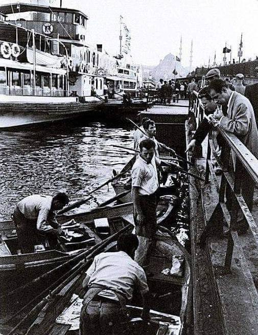
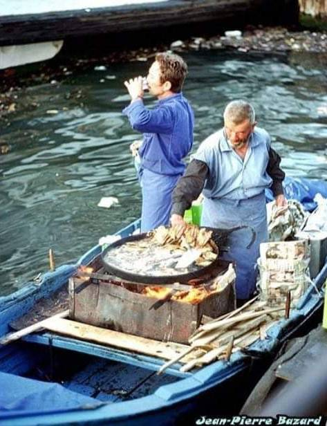
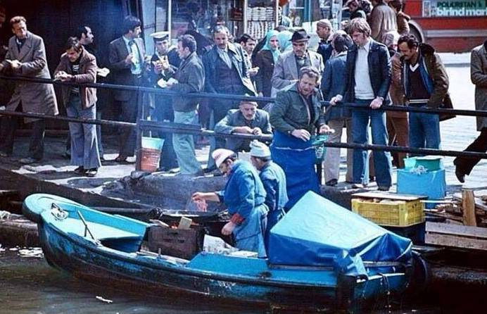
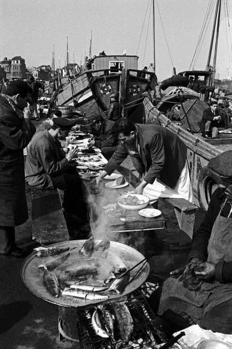

Medya Kaynakları


Basın Bültenleri

Coğrafi İşaret · Eminönü
Eminönü Balık Ekmeği coğrafi işaret tesciliyle koruma altında
İstanbul’un kıyı kültürünün simgelerinden Eminönü Balık Ekmeği; geleneksel hazırlama, sunum ve ürün özellikleriyle koruma altına alındı.
Fotoğraflar
 Teknede balık ekmek kültürü Büyüt
Teknede balık ekmek kültürü Büyüt


Tarihi Eminönü kıyısı Büyüt Tarihi teknede servis Büyüt
Tarihi teknede servis Büyüt
 Balık ekmek ve turşu suyu Büyüt
Balık ekmek ve turşu suyu Büyüt


Teknede açık ateşte hazırlık Büyüt Izgarada hazırlık Büyüt
Kuş bakışı Eminönü sahili Büyüt
Izgarada hazırlık Büyüt
Kuş bakışı Eminönü sahili Büyüt


Sahilde balık ekmek kuyruğu Büyüt Galata Köprüsü'nde balıkçılar Büyüt
Galata Köprüsü'nde balıkçılar Büyüt
 Günün ilk balık teslimatı Büyüt
Günün ilk balık teslimatı Büyüt
 Geleneksel malzemelerle hazırlık Büyüt
Geleneksel malzemelerle hazırlık Büyüt


İskelede geleneksel pişirme Büyüt Vapur manzarasında balık ekmek Büyüt
Vapur manzarasında balık ekmek Büyüt
 Eminönü'nde akşam servisi Büyüt
Eminönü'nde akşam servisi Büyüt
 Balık ekmek ustası Büyüt
Balık ekmek ustası Büyüt